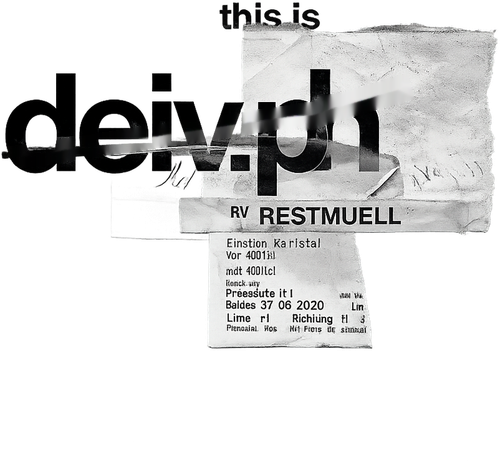

Cada pieza de mi equipo tiene una función. Elijo la más adecuada para cada momento.
Ediciones
TRANSFORMO IDEAS
EN IMÁGENES.
Cámara en mano, ideas en marcha.
Soy David, filmmaker, editor de vídeo y fotógrafo de Córdoba. Transformo ideas en imágenes que conectan, buscando siempre el equilibrio entre creatividad, emoción y autenticidad.
Llevo años detrás de la cámara contando historias: desde piezas de marca hasta momentos personales que merecen quedar bien contados. Cada proyecto empieza igual, escuchando qué se quiere transmitir antes de pensar en un solo plano.
Trabajo tanto en el rodaje como en la edición, así que puedo acompañar un proyecto de principio a fin: guion, dirección, cámara, montaje y color.
— Este texto es un punto de partida. Puedes decirme qué quieres contar aquí y lo dejamos a tu medida.
Ajustes
Todo lo que se puede personalizar en la web, agrupado por bloques.
Carrusel de cámaras
Elige qué fotos se muestran en el carrusel del último fotograma.
La idea final es que estas imágenes salgan solas del último fotograma de la historia (el que tiene el elemento para añadir), en cuanto esa pieza esté lista.
Mientras tanto, puedes subir aquí las fotos que quieras y se usarán en el carrusel; si no subes ninguna, se muestran unas de ejemplo. Si a alguna se le corta la cara, arrastra la foto hacia arriba o abajo para ajustar qué parte se ve.
Ahora mismo se están mostrando unas imágenes de ejemplo en el carrusel.
Collage de "Sobre mí"
Elige las fotos que forman el collage animado de bienvenida en la sección "Sobre mí".
Estas fotos son tuyas: se guardan en la nube (no solo en este navegador) y se muestran en un collage con una pequeña animación al entrar en "Sobre mí".
Si no subes ninguna, se muestra una tarjeta invitándote a añadirlas. Si a alguna se le corta la cara, arrastra la foto hacia arriba o abajo para ajustar qué parte se ve.
Ahora mismo se muestra una tarjeta de invitación en "Sobre mí".
Textos de la web
Edita las frases de presentación sin tocar código. Cada cambio queda guardado en tu historial.
Estos textos se guardan en la nube y sustituyen a los de ejemplo para todos los visitantes. Puedes volver a los originales en cualquier momento con "Restablecer".
Guardado.
Comparaciones antes/después
Las parejas de fotos del comparador con flechas que aparece justo encima de "Descubre mi trabajo". Añade tantas parejas como quieras: las flechas pasan de una a otra.
Galería que se expande. La fila de fotos estrechas que aparece justo debajo de "Descubre mi trabajo": al pasar el ratón (o al tocarla en el móvil) se abre y muestra el nombre y la frase. Añade tantas como quieras. El recuadro de vista previa de cada foto se ve exactamente igual que la tarjeta real: si al expandirse se corta por el sitio que no toca (por ejemplo, corta cabezas), coge la foto con el dedo o el ratón DIRECTAMENTE en ese recuadro y arrástrala libremente hasta donde quieras que quede. Un toque corto sin arrastrar cambia la foto.
Categorías de "Proyectos"
Botones (Deportes, Fiestas...) que aparecen arriba a la izquierda de "Proyectos". Cada categoría tiene su propia galería de fotos, que se abre a pantalla completa al tocar su botón.
Cuenta e historial
Tu acceso de administrador, el registro de cambios y la copia de seguridad de todo lo guardado.
Contraseña. Cámbiala cuando quieras; se pide la actual por seguridad.
Copia de seguridad. Tus fotos, textos e historial ya se guardan en la nube y se ven igual entres desde donde entres. Aun así, descarga una copia de vez en cuando por si acaso, y restáurala cuando quieras.
Historial de cambios. Cada foto añadida o quitada, cada texto editado y cada acceso quedan aquí, con fecha y hora, para que tengas todo registrado.
